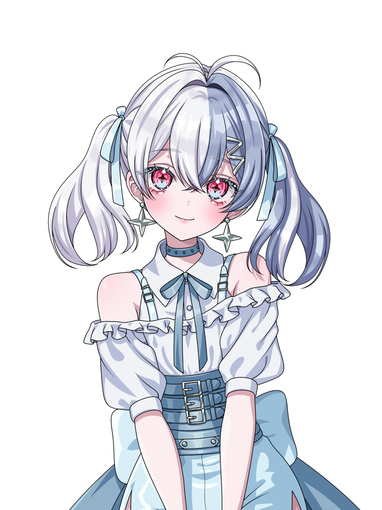

ちつじょ めあ / CHITSUJO MEA
Official Profile
ちつじょ めあ / CHITSUJO MEA
秩序めあ
配信やSNSを中心に活動しているインターネットアイドルです。 はじめましての人も、いつもの人も、ここからめあのことを知ってくれたらうれしいです。
- Debut
- 2026.04.13
- Birthday
- 05.17
- Mama
- とりうら 様
2026.04.13 debut

About
自己紹介
秩序を守りたい気持ちと、ちょっとだけ乱したくなる気持ちのあいだで活動しているインターネットアイドル、秩序めあです。
配信やSNSを通して、みつけてくれた人の毎日に少しだけ楽しい時間を増やせるように、マイペースに発信しています。
はじめましての人も、いつもの人も、ここからめあのことを知ってくれたらうれしいです。
Profile Data
基本情報
配信、動画、SNSを中心に活動中
誕生日
活動開始日
大好きママ
主な活動場所
Fan Tags
タグ
Favorite
好きなもの
きゅるりんってしてみて
iLiFE!【あいらいふ】
ポケモン
歌うこと
ゲーム
Guideline
お願いごと
応援や投稿の前に、確認してもらえるとうれしいです。
- ファンアートを投稿してくれるときは #めはあるか を付けてもらえるとうれしいです。
- 感想や切り抜きなどの総合タグは #めあにめは を使ってください。
- 不幸話やネガティブな身の上話には、僕も傷つくので反応できません。
- DM は送って大丈夫ですが、お返事は基本できません。
- 相談ごとは、マシュマロ開設後にそちらへお願いします。
- AI学習、無断使用、転載はお断りしています。
Accounts
活動リンク
配信、SNS、グッズはこちらから